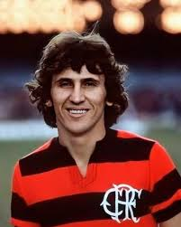

CLUBE DE REGATAS DO FLAMENGO
CLUBE DE REGATAS DO FLAMENGO

Zico — Arthur Antunes Coimbra
Nascimento: 3 de março de 1953 (Rio de Janeiro, RJ) • Posição: Meia-atacante / jogador e técnico
Zico é amplamente reconhecido como um dos maiores jogadores da história do Clube de Regatas do Flamengo e do futebol brasileiro. Famoso pela técnica apurada, cobranças de falta precisas e visão de jogo, Zico marcou época nas décadas de 1970 e 1980, conquistando títulos nacionais e internacionais, além de ser ídolo da torcida rubro-negra.
Gols pelo Flamengo (oficiais)
~500
Período no clube (principal)
1971–1983
Seleção Brasileira
71 jogos
Breve trajetória
- 1971: Estreia no profissional do Flamengo.
- 1981: Conquista da Copa Libertadores e do Mundial Interclubes com o Flamengo.